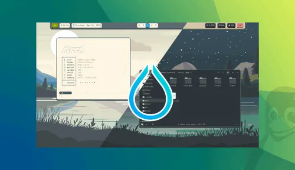

.png)

¿Qué es? Hyprland
Hyprland es un compositor dinámico de ventanas tipo tiling para Wayland basado en wlroots. No solo Es extremadamente rápido, sino que ofrece las animaciones más fluidas y personalizables del ecosistema Linux.
El Futuro de Wayland
Diseñado para aquellos que buscan el máximo control sobre su flujo de trabajo sin sacrificar la Estética. Con su motor de animaciones basado en físicas, Hyprland redefine lo que un gestor de Ventanas puede hacer.
¿Por qué elegir Hyprland?
Animaciones Basadas en Físicas
A diferencia de otros compositores, Hyprland utiliza un motor de Animaciones avanzado que Proporciona una fluidez inigualable y Transiciones orgánicas.
Configuración Dinámica
Modifica tu entorno en tiempo real. No Es necesario reiniciar el compositor Para ver los cambios; edita tu archivo De configuración y observa los Resultados al instante.
Wayland Nativo
Construido desde cero para Wayland, Aprovechando las últimas tecnologías Para eliminar el "tearing" visual y Mejorar la eficiencia energética.
Altamente Extensible
Soporta una amplia gama de plugins Y herramientas externas como Waybar, Wofi y Hyprpaper para Construir el escritorio de tus sueños.
Fácil de Configurar
A pesar de su potencia, el archivo de Configuración es intuitivo y legible, Permitiendo que tanto principiantes Como expertos lo dominen Rápidamente.
Gestión de Ventanas Inteligente
Organiza tus ventanas Automáticamente mediante layouts "Dwindle" o "master", optimizando Cada píxel de tu pantalla.
Rendimiento Visual
Estática
Dentro de un entorno personalizado
Fluidez de entorno
60/144 FPS
Entorno dinámico